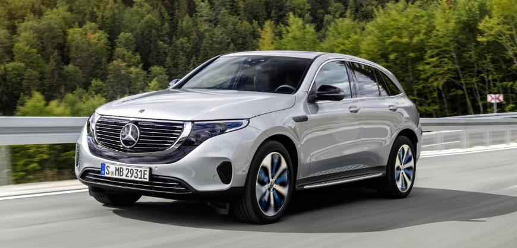
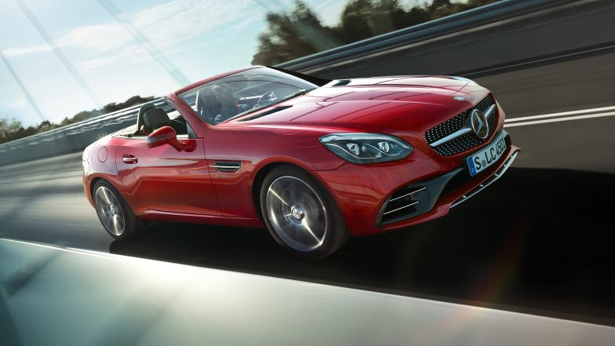
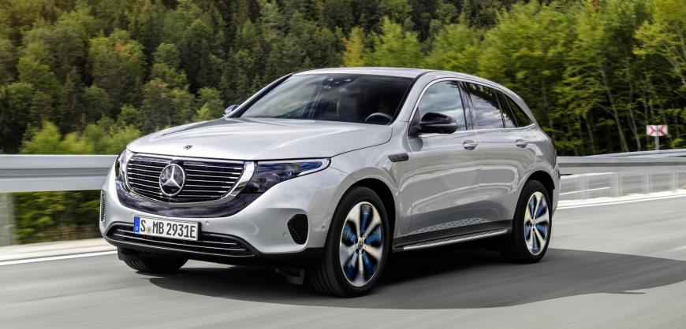
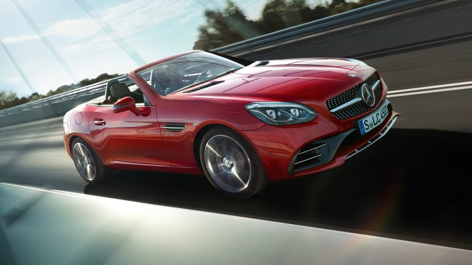

L’intérieur évoque le cockpit d’un
avion et produit une impression spectaculaire,
y compris lorsque la capote est ouverte. Outre
la console centrale agencée, l’habitacle se
distingue notamment par la position d’assise
très basse. Le caractère artisanal haut de gamme
des finitions est visible et perceptible au toucher
| Options | Descriptions |
|---|---|
| Dimensions : | 4544 mm L x 1939-2007 mm L x 1259-1260 mm H |
| type : | Voiture de sport. |
| Volume de coffre : | 165 L |
| Acceleration 0-100 km/h : | 3,7 a 4 secondes |
| capacite de reservoir : | 75 L |
| Prix | 66 350 € |
Après une présentation au Mondial de l'Automobile
(4 au 14 octobre 2018), le lancement commercial est
prévu en milieu d’année 2019. Le Mercedes EQC devrait
débuter à environ 85.000 euros.
A bord, le design est épuré, on retrouve la grande dalle
numérique composée de deux écrans, ainsi que le système
multimédia MBUX, il faut noter la présence d’un système de
pré-climatisation/chauffage commandable à distance.
| Options | Descriptions |
|---|---|
| Puissance de recharge max: | 450 kW |
| type : | Voiture 100% electrique de 408 chevaux. |
| Vitesse maximale : | 180 km/h |
| Acceleration 0-100 km/h : | 5.1 secondes |
| Autonomie électrique (NEDC): | 450 km |
| Prix | 59 350 € |
Exclusif à Mercedes-Benz, le MAGIC SKY CONTROL rend votre
toit transparent en alignant électroniquement des particules
intégrées au verre. Coupez le courant électrique et le verre
redevient foncé, vous protégeant des rayons du soleil et de son
énergie thermique. Il bloque efficacement les rayons UV et
infrarouges en tout temps, maintenant l'habitacle plus frais.
| Options | Descriptions |
|---|---|
| reservoir : | 90 L. |
| type : | propulsion. |
| Vitesse maximale : | 205 km/h |
| Acceleration 0-100 km/h : | 7.9 secondes |
| Durée d’ouverture de la capote: | 20 s. |
| Prix | 146 350 € |